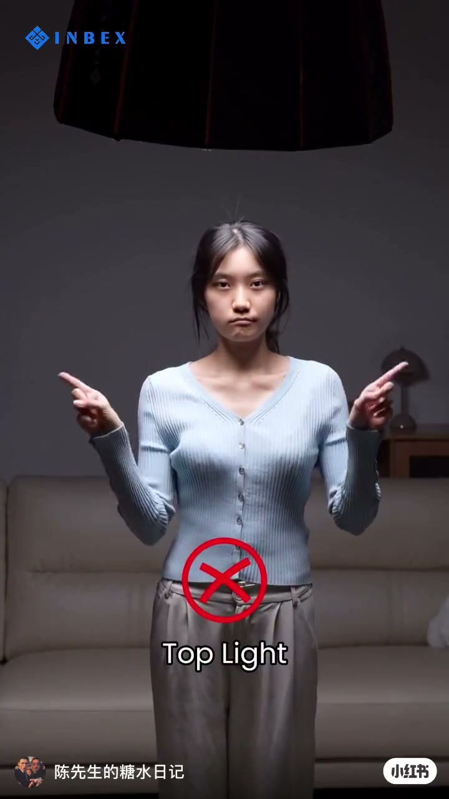
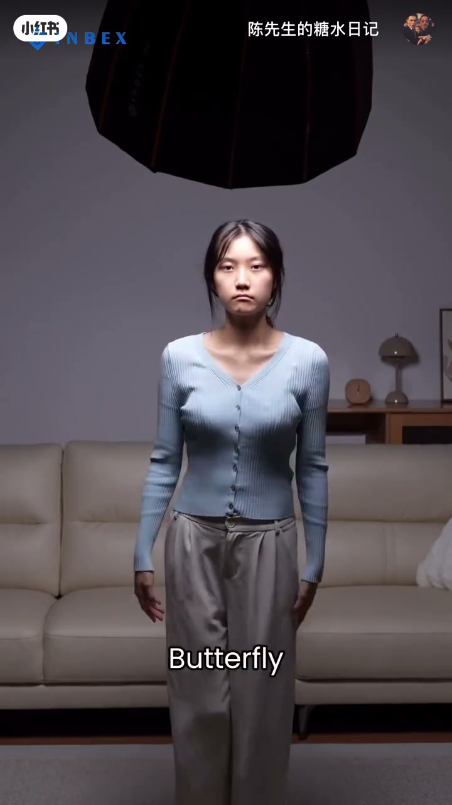
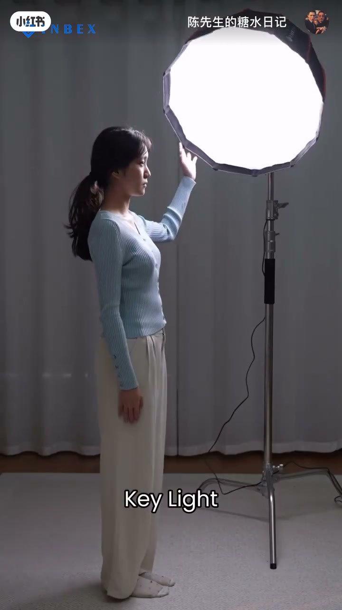

内容要点
「陈先生的糖水日记」用20秒对比片讲人像灯位：顶光（Top Light）打叉、蝴蝶光（Butterfly）从错到对、主光（Key Light）打勾。Whisper 唯一分段为乱码广告语，全文依据画面标签与红叉/绿勾重建，未依赖口播。
知识结构
[00:00→00:06]
Top Light×
灯在正上方，眼窝鼻底硬阴影；画面标红叉。
[00:06→00:14]
Butterfly
灯略前移高位：先示错例，再示鼻下小蝶影的正确蝴蝶光。
[00:14→00:20]
Key Light✓
主光前置侧打，面部干净有层次；绿勾收尾。
总结
人像别正顶光；把灯移到面前高位做蝴蝶光/主光，脸立刻立起来。
00:00-00:20顶光打叉 → 蝴蝶光 → 主光打勾
同一模特、客厅沙发场景：第一组大灯罩压在头顶，字幕 Top Light + 红叉，正面眼窝鼻底一片死黑，侧面也能看到从头顶砸下来的硬投影。
第二组标 Butterfly：灯仍偏高，但逐渐移到面前后，鼻下出现蝴蝶影；错例仍带红叉，对例改绿勾。第三组标 Key Light：柔光箱在斜前方作主光，模特竖大拇指，绿勾收束——整片几乎无有效口播，全靠标签与对错符号教学。

[00:02] Top Light 正顶光：眼窝硬影，画面标红叉
Top light straight overhead: hard eye-socket shadows; red X on screen

[00:10] Butterfly：灯移至面前高位，出现鼻下蝶影
Butterfly: light high in front; butterfly shadow under the nose

[00:17] Key Light 斜前主光：绿勾，模特竖大拇指
Key light from front-oblique: green check; model thumbs up
完整转录（1段）
以下文本由 Whisper medium 模型自动转录，可能存在少量识别误差，已尽可能修正。
请不吝点赞订阅转发打赏支持明镜与点点栏目